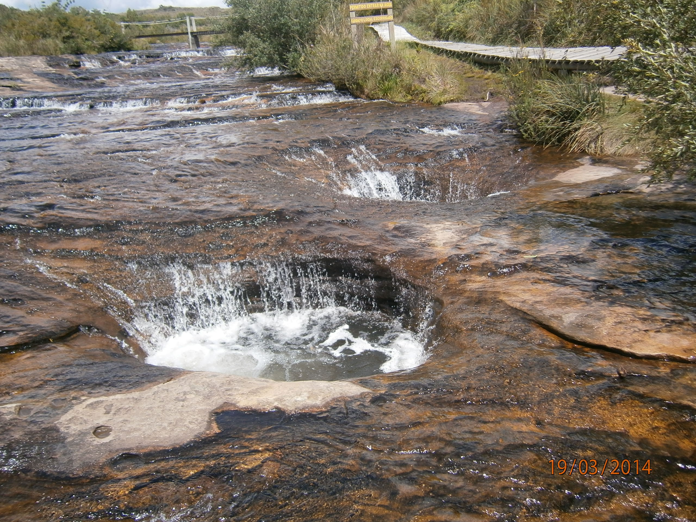
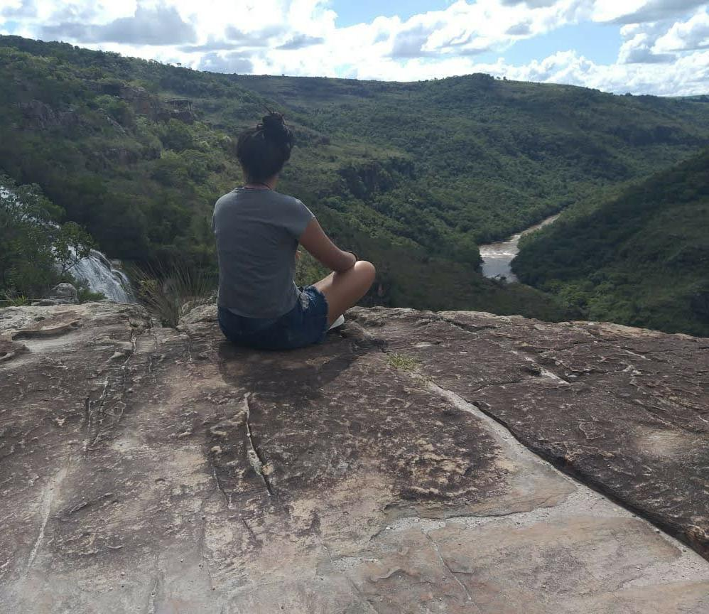
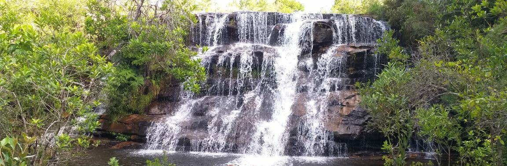

Sempre que entro em contato com a natureza me sinto mais:
Leve;
Tranquila;
Relaxada;
Grata.
Como o ditado já diz: Mente sã, corpo são! Sou uma pessoa muito ansiosa, então uma das formas que me permite restaurar é se aventurar na natureza, realizando trilhas, conhecendo cachoeiras e são esses fatores que acabaram se tornando meu hobby.
Essa foto acima foi tirada no dia 22/12/2019, juntamente com minha família realizemos uma trilha, em que foi a primeira vez que conheci o Canyon Guartela em Tibagi-PR. Um aspecto que possibilitou de a trilha se tornar meu hobby, foi que após realizar uma longa caminhada, passando por vários lugares que fazem parte dela, nesse trajeto encontramos cachoeiras, animais, entre outros detalhes, que nos permitem ter um maior contato com a nossa maravilhosa natureza e no final encontramos uma paisagem extremamente bonita.
Ao longo do trajeto
Passamos pelo Panelão

Imagem do Panelão
Depois de um tempo observa-se o rio
Imagem do rio
E por fim apreciar a paisagem extremamente bonita

Imagem do Mirante do Canyon Guartela
Ao chegar no final, após passar por vários lugares com belíssimos detalhes, é notável a junção de todos esses detalhes que transforma em uma maravilhosa paisagem. Durante o trajeto, eu gosto de olhar cada fenômeno, escutar e sentir a natureza, e quando chega ao final, é como se aquela paisagem demonstrasse que todos aqueles aspectos estão ali, formando aquela mesma paisagem, mostrando o quanto cada detalhe da natureza é lindo. Sou religiosa então também aprecio no sentindo de o quanto Deus é maravilhoso, por meio desses aspectos naturais. A cidade de Tibagi-PR, possui uma beleza natural que chama minha atenção, por isso através de trilhas consigo admirar dessa forma, tornando-se meu hobby.
Cachoeira Recanto da Dora:

Imagem Cachoeira Recanto da Dora - Tibagi
Buraco do Padre: Imagem Buraco do Padre - Ponta Grossa
Fazer trilha para mim é:
Um hobby;
Uma aventura;
Uma conexão com a natureza;
Um desafio;
Uma aprendizagem;
Uma superação.
Hobby:
Pois é a atividade que amo realizar como forma de lazer e relaxamento.
Uma aventura:
Sempre realizo as trilhas acompanhada, seja minha família ou amigos, e essa presença deixa ela mais aconchegante e quando se reunimos se torna uma aventura.
Uma conexão com a natureza:
Cada vez que faço uma trilha é como se conhecesse mais a natureza e apreciasse cada detalhe que torna o lugar único e permite essa conexão com a ela.
Um desafio:
Durante o trajeto não sabemos o que vamos encontrar e como iremos passar, tornando a trilha um desafio a cada passo.
Uma aprendizagem:
Ao me direncionar para o meu interior, eu acabo me conhendo mais, além de que durante o percurso observo os detalhes permitindo conhecer cada vez mais sobre a natureza e sobre eu mesma.
Uma superação:
Após percorrer um longo período, ao final encontramos uma paisagem extremamente maravilhosa, que me permite pensar o quanto sou grata a Deus por proporcionar cada detalhe que torna a paisagem perfeita e que a cada desafio que percorremos no final vale a pena cada obstáculos que tivemos que passar.